전자상거래운용사 (2004-04-18 기출문제)
1과목: 인터넷 일반
1. ＜A＞ 태그에 대한 다음 설명 중 옳지 않은 것은?
- HREF 속성에는 링크하려는 문서명 또는 URL을 명시한다.
- TARGET 속성은 링크된 URL 실행 결과가 나타날 위치(프레임,윈도우)를 지정한다.
- NAME 속성은 HTML 문서 내에 표시된 링크를 가리킨다.
- HREF 속성에 전자메일 주소를 사용할 수 없다.
(정답률: 알수없음)

2. 다음 중 무선 인터넷과 가장 관련이 적은 것은?
- WAP(Wireless Application Protocol)
- WLL(Wireless Local Loop)
- WML(Wireless Markup Language)
- WTP(Wireless Transaction Protocol)
(정답률: 알수없음)
3. 다음은 eval 이라는 내장 함수를 사용한 연산 예를 보여주고 있다. 연산을 한 후의 str1에 저장되는 결과 값으로 맞는 것은?
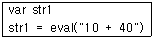
- 10
- 25
- 40
- 50
(정답률: 알수없음)
4. 다음 중 테이블을 작성하는데 사용되지 않는 태그는 무엇인가?
- ＜TABLE＞
- ＜TR＞
- ＜TD＞
- ＜TC＞
(정답률: 알수없음)
5. 멀티미디어 포맷에 대한 다음 설명 중 옳지 않은 것은?
- PDF 파일은 Adobe사의 전자출판용 문서형식이다.
- 플래시 파일은 사용자와 상호작용이 가능하다.
- 음악 파일 형식에는 MID, WAV, AVI 등이 있다.
- MPEG은 동영상 압축 포맷 형식이다.
(정답률: 알수없음)
6. 다음 중 아래 HTML 문서 수행 결과로 옳은 것은?
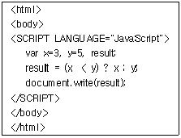
- 아무 결과도 출력하지 않는다.
- 3
- 5
- 8
(정답률: 알수없음)
7. 다음 중 FTP 사용시 네티켓으로 가장 옳지 않은 것은?
- Copyright나 License를 주의해서 파일을 주고 받는다.
- 파일을 송수신할 때는 업무시간을 피해서 하는 것이 좋다.
- 파일을 올릴 때는 사전에 바이러스 검사를 철저히 해야하고 동일한 파일이 존재하는지를 살펴보아야 한다.
- Anonymous FTP를 사용할 때에는 login을 사용자 계정으로 입력하고 Password에는 자신의 암호를 입력한다.
(정답률: 알수없음)
8. 검색엔진 유형에 대한 다음 설명 중 옳은 것은?
- 인덱스(키워드) 방식 - 일련의 인덱스(키워드)를 보여주고 사용자가 인덱스(키워드)를 이용하여 자료를 찾는 방식
- 디렉토리(메뉴) 방식 - 정보들을 주제별, 계층별로 정리하여 사용자는 분류 항목을 따라가면서 원하는 정보를 찾는 방식
- 통합형(메타) 방식 - 인덱스 방식과 디렉토리 방식을 통합한 방식으로 인덱스를 보여주거나 또는 디렉토리를 보여 주어 정보를 찾도록 하는 방식
- 열거형 방식 - 모든 정보를 일정한 순서에 의해 열거한 정보를 보여주고 정보를 검색하도록 하는 방식
(정답률: 알수없음)
9. 다음 중 벡터(Vector) 방식의 응용프로그램이 아닌 것은?
- 일러스트레이터
- 포토샵
- 플래시
- 3D-Max
(정답률: 알수없음)
10. 인터넷 IP 주소는 현재 5개의 클래스로 구분되어 있다. 다음 중 클래스별 주소가 잘못 설정된 것은?
- A Class : 121.1.5.7
- B Class : 127.0.0.0
- C Class : 193.251.7.6
- D Class : 239.255.255.255
(정답률: 알수없음)
11. 다음 중 JavaScript의 특징에 관한 설명으로 옳지 않은 것은?
- 자바스크립트는 스크립트 언어이다.
- HTML 문서내에 삽입하여 사용할 수 있다.
- 사용자 이벤트 프로그래밍에 적합하다.
- 완전한 객체지향(Object-Oriented)언어이다.
(정답률: 알수없음)
12. 다음 중 검색엔진의 구성 요소인 로봇(Robot)에 대한 설명으로 옳지 않은 것은?
- 일종의 자동 순회 프로그램이다.
- 로봇 프로그램을 일컫는 용어로 스파이더, 크롤러, 스쿠터 등이 있다.
- 카탈로그(Catalog)라고도 불려지기도 하며 웹페이지의 내용을 저장하고 있는 거대한 도서관이다.
- 웹에 있는 문서를 자동으로 찾아서 그 문서를 모아오는 검색 프로그램을 말한다.
(정답률: 알수없음)
13. 인터넷 서비스 중 키워드를 사용하여 네트워크 상에 존재하는 수많은 데이터베이스로 부터 원하는 정보를 검색해 주는 검색도구는?
- Usenet
- Telnet
- WAIS
- IRC
(정답률: 알수없음)
14. 프레임 관련 태그에 대한 다음 설명 중 옳은 것은?
- 프레임은 웹브라우저를 나누어 표시하기 위해 사용하는 태그로써, ＜BODY＞...＜/BODY＞ 태그 안에 작성해야 한다.
- 프레임을 나누기 위해서는 ＜FRAMESET＞...＜/FRAMESET＞ 태그를 사용하고, ROWS는 수직, COLS는 수평으로 분할한다.
- 나누어진 프레임에 표시할 내용은 ＜FRAME＞...＜/FRAME＞ 태그 사이에 의해 지정하고, 수직인 경우 위에서 아래로, 수평인 경우 좌측에서 우측 순서대로 작성한다.
- ＜FRAME＞ 태그의 NAME 옵션을 이용하여 각 프레임에 고유의 이름을 지정한다.
(정답률: 알수없음)
15. 관계형 데이터베이스의 테이블인 학생(학번, 이름, 학과명)에서 전자상거래과 학생이 50명, 기계과 학생이 100명 있다고 할 때 다음 SQL문 ㈎, ㈏ 의 실행 결과 테이블의 행(튜플) 수는 각각 얼마인가?
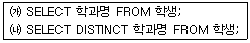
- ㈎ 2, ㈏ 2
- ㈎ 150, ㈏ 2
- ㈎ 150, ㈏ 50
- ㈎ 150, ㈏ 150
(정답률: 알수없음)
16. 다음 중 IPv6의 주소 체계와 특징에 관한 설명으로 옳지 않은 것은?
- IPv6는 유니캐스트(Unicast), 애니캐스트(Anycast), 멀티캐스트(Multicast) 등 3가지 형태의 주소에 관한 규칙을 가지고 있다.
- IPv4 주소 체계의 한계를 극복하고, 실시간으로 멀티미디어를 처리할 수 있도록 개발된 64bit 주소 체계의 차세대 인터넷 프로토콜이다.
- IPv6는 헤더가 확장됨으로서, 패킷의 출처 인증, 데이터 무결성의 보장 및 비밀의 보장 등을 위한 메커니즘을 지정할 수 있도록 하고 있다.
- ATM과 같은 고속망뿐만 아니라 무선망과 같은 저속의 망에서도 동작하도록 설계되었다.
(정답률: 알수없음)
17. ASP 에서 Cookies, Form, QueryString, ServerVariables, ClientCertificate 등의 정보를 담고 있는 객체로써 웹 브라우저에서 웹 서버쪽으로 전달되는 모든 정보를 액세스하는데 사용하는 객체는?
- Response 객체
- Request 객체
- Session 객체
- Application 객체
(정답률: 알수없음)
18. 서비스 제공자가 개인 정보의 안정성 확보를 위해 마련해야 할 기술적 대책으로 옳지 않은 것은?
- 비밀번호 등을 이용한 보안 장치
- 암호화를 통하여 개인 정보를 안전하게 전송하는 장치
- 침입차단시스템 등의 접근 통제장치
- 데이터베이스에 저장하지 않고 별도로 저장하는 장치
(정답률: 알수없음)
19. 다음 문장의 괄호 안에 들어갈 가장 적절한 용어는?
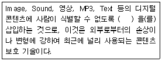
- 파이어마크(Firemark)
- 패스워드(Password)
- 워터마크(Watermark)
- 지문(Fingerprint)
(정답률: 알수없음)
20. 다음 중 TITLE 태그에 대한 설명 중 가장 옳지 않은 것은?
- ＜TITLE＞ 태그는 HTML 문서의 제목을 정하고자 할 때 사용한다.
- ＜TITLE＞ 태그는 ＜HEAD＞ 태그 안에 오직 한 번 들어갈 수 있다.
- ＜TITLE＞에는 문서의 제목을 나타내는 문자열과 다른 태그들이 들어갈 수 있다.
- ＜TITLE＞에 들어가는 문서의 제목은 각 브라우저의 윈도우 상단에 나타난다.
(정답률: 알수없음)
2과목: 전자상거래 일반
21. 디지털 상품에 대한 다음 설명 중 적절하지 않은?
- 디지털 상품은 생산초기에는 적은 고정 비용이 들지만, 추가생산에 드는 비용은 매우 많으므로 수익을 얻기 위해서는 규모의 경제를 실현해야 한다.
- 디지털 상품은 경험재의 성격을 가진다.
- 인터넷 기업은 디지털 상품의 평가를 용이하게 하여 소비자의 불확실성을 줄이기 위하여 노력해야 한다.
- 디지털 상품은 다양하게 변형시켜 판매할 수 있다.
(정답률: 알수없음)
22. 오늘날 인터넷은 전자상거래의 기반으로 각광받고 있다. 인터넷과 관련된 산업을 인터넷 기반산업, 인터넷 지원산업, 인터넷 응용산업으로 구분하는 것이 보통이다. 이 중 인터넷 응용산업과 가장 거리가 먼 것은?
- 전자상거래
- 웹호스팅
- 인터넷 문화산업
- 인터넷 방송통신
(정답률: 알수없음)
23. 전자상거래가 제품이나 서비스를 공급하는 개인 소비자에게 미치는 영향에 대한 다음 설명 중 가장 옳지 않은 것은?
- 상품 선택의 폭 확대
- 보다 저렴한 가격으로 제품/서비스 구입
- 개인 정보의 노출 가능성 축소
- 신속하고 편리한 구매 가능
(정답률: 알수없음)
24. 다음은 효율적인 전자결제시스템이 이루어지기 위한 전제조건을 나타내고 있다. 가장 적절하지 않은 것은?
- 결제시스템은 암호 알고리즘이 파괴되지 않을 때에만 그 안전성이 유지된다.
- 소액 지불과 처리 비용이 경제적이어야 한다.
- 거래의 투명성을 위하여 개인 정보 및 실명성이 보장되어야 한다.
- 결제 처리 시간 및 비용 측면을 고려해서 실시간으로 이루어져야 한다.
(정답률: 알수없음)
25. 다음 중 전자상거래 효과와 가장 거리가 먼 것은?
- 거래비용 절감
- 새로운 시장과 사업기회의 창출
- 거래과정의 투명성
- 공급자간 불완전 경쟁시장 형성
(정답률: 알수없음)
26. 전자상거래에서 고객의 일반적인 구매단계를 순서대로 가장 잘 연결된 것은?
- 제품검색-제품선택-제품주문-지불-제품수취
- 제품선택-제품검색-지불-제품주문-제품수취
- 제품검색-제품주문-제품선택-지불-제품수취
- 제품검색-제품선택-지불-제품주문-제품수취
(정답률: 알수없음)
27. 인터넷 마케팅에서 고객 차별화에 논리적 근거를 제공해 주는 '20 대 80의 법칙'을 올바르게 설명한 것은?
- 기업의 직원 20명이 고객 80명을 전담하도록 한다.
- 기업매출의 20%는 우량한 고객 80%가 충당해 준다.
- 기업매출의 80%는 우량한 고객 20%가 충당해 준다.
- 마케팅 비용의 20%를 고객에게 사용하면 80%의 매출 상승효과가 있다.
(정답률: 알수없음)
28. 아래 설명에 해당하는 데이터베이스 마케팅 전략은?
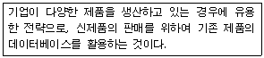
- 교차 판매 전략
- 고객 활성화 전략
- 고객 유지 전략
- 신규고객 확보 전략
(정답률: 알수없음)
29. 다음 각 지문의 괄호 안에 들어갈 가장 적절한 용어는 무엇인가?
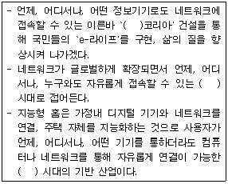
- 디지털 (Digital)
- 유비쿼터스(Ubiquitous)
- 아날로그 (Analogue)
- 네트워크 (Network)
(정답률: 알수없음)
30. 다음 중 인터넷 광고에 대한 설명으로 옳지 않은 것은?
- 소비자와 기업간 상호작용이 어렵다.
- 기업에 가장 적합한 고객만을 선별적으로 타겟팅 할 수 있다.
- 브랜드에 대한 인터넷 사용자들의 반응을 비교적 쉽게 측정하고 분석할 수 있다.
- 광고비용이 다른 매체에 비해 저렴한 편이다.
(정답률: 알수없음)
31. 다음 인터넷 마케팅에 대한 설명 중 가장 옳지 않은 것은?
- 고객과의 1 : 1 접촉이 가능하다.
- 24시간 실시간 접촉이 가능하다.
- 장소적, 시간적 한계를 극복할 수 있다.
- 일방향 마케팅에 매우 적합하다.
(정답률: 알수없음)
32. 다음 중 고객관계관리(CRM)를 위해서 필요한 요소와 가장 거리가 먼 것은?
- 자재 소요 계획(Materials Requirement Planning)
- 고객 통합 데이터베이스
- 고객 특성 분석을 위한 데이터마이닝 도구
- 데이터 분석결과를 활용하는 마케팅 채널과의 연계
(정답률: 알수없음)
33. 인터넷 마케팅에 대한 특징 중 가장 옳지 않은 것은?
- 대중 마케팅 중심
- 광고 효과 측정용이
- 중소기업에서도 강력한 마케팅 수단으로 활용 가능
- 정보를 기반으로 하는 마케팅
(정답률: 알수없음)
34. 다음 중 물류의 기본 원칙인 3S1L에 속하지 않는 것은?
- 특별하게 (Specially)
- 신속하게 (Speedy)
- 안전하게 (Securely)
- 확실하게 (Surely)
(정답률: 알수없음)
35. 냅스터(Napster)나 소리바다(Soribada)와 같이 정보를 찾는 사람과 정보를 갖고 있는 사람이 인터넷을 통하여 직접 서로의 데이터를 주고받는 거래유형은?
- 기업-개인간(B2C) 거래
- 기업간(B2B) 거래
- 개인간(P2P) 거래
- 정부-기업간(G2B) 거래
(정답률: 알수없음)
36. 다음 내용에 해당하는 전자상거래의 유형은?
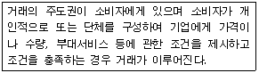
- C2B
- B2C
- B2B
- B2G
(정답률: 알수없음)
37. 효과적인 상표 이미지를 구축하여 강력한 상표가 되면 얻을 수 있는 효과가 아닌 것은?
- 고객의 유인과 확보
- 상표 집착을 방지
- 상표 확장을 통한 성장
- 웹 트래픽 증가
(정답률: 알수없음)
38. 전자상거래에 있어서 구매자 입장에서의 장점으로 가장 거리가 먼 것은?
- 시간적, 공간적 제약을 극복하여 언제 어디서나 상품 구입이 가능하다.
- 구매의사 결정 과정에서 다양한 상품 정보를 확보 할 수 있어 합리적인 구매의사 결정을 할 수 있다.
- 유통 단계의 단축으로 상대적으로 저렴한 가격으로 구매할 수 있다.
- 계획에서 벗어난 과다한 구매를 할 가능성이 상대적으로 높다.
(정답률: 알수없음)
39. 다음 글의 내용에 해당하는 배송 시스템은?
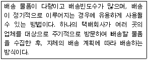
- 택배 서비스
- 소비자 집약형 배송시스템
- 생산자 집약형 배송시스템
- 프랜차이즈 방식에 의한 배송시스템
(정답률: 알수없음)
40. 다음은 물류산업의 패러다임 변화를 나타내고 있다. 가장 적절하지 않은 것은?
- 다품종 소량 물류→소품종 대량 물류
- 종이 문서 기반 물류→인터넷 기반 물류
- 보관 물류→무재고 물류
- 공급자 중심 물류→맞춤(고객 중시) 물류
(정답률: 알수없음)
3과목: 컴퓨터 및 통신 일반
41. 다음은 컴퓨터 네트워크 보안에서 컴퓨터 시스템 공격(Attack)에 대한 설명이다. 이 중 옳지 않은 것은?
- 접근(Access) : 권한이 있는 공격자가 정보를 얻으려고 하는 시도
- 수정(Modification) : 공격자가 수정할 권한이 없는 정보를 수정하려는 시도
- 서비스의 거부(Denial of Service) : 시스템에 대한 합법적인 사용자의 자원 사용을 못하게 함
- 부인(Repudiation) : 정보의 책임추적성에 대한 공격으로 위장(Masquerading)이나 공격사건 자체를 부인함을 뜻한다.
(정답률: 알수없음)
42. 멀티미디어 파일을 전송하기 위해 통신망이 갖추어야 할 특성 중 옳지 않은 것은?
- 넓은 대역폭 혹은 처리율을 필요로 한다.
- 실시간 전송과 미디어스트림 간의 비동기화를 제공하여야 한다.
- 미디어의 다양한 서비스품질(QoS)을 제공하여야 한다.
- 멀티미디어 통신에 따라 다양한 연결형태, 즉 양방향대칭, 양방향비대칭, 멀티캐스팅, 멀티커넥션, 멀티파티 커넥션 등을 제공하여야 한다.
(정답률: 알수없음)
43. 다음 중 머천트 서버(Merchant Server) 구입시 고려사항 중 옳지 않은 것은?
- 쇼핑몰 구축의 편이성과 신속성
- 마케팅 지원 기능의 다양성
- 원시 코드의 공개
- 머천트 서버의 확장성과 유연성
(정답률: 알수없음)
44. 특정인의 이름이나 ID를 통해 전자우편주소를 찾아내는 서비스 명령어는?
- nslookup
- netfind
- finger
- talk
(정답률: 알수없음)
45. 무선인터넷 산업과 관련된 설명 중 옳지 않은 것은?
- 무선인터넷은 현재 전 세계적으로 통일된 프로토콜을 사용한다.
- 무선인터넷의 대표적인 프로토콜 중 하나는 WAP이다.
- 블루투스(Bluetooth)는 휴대용 정보통신기기를 이용하여 다른 인터넷 및 다른 무선통신 장치와의 통신을 가능케 한다.
- IMT2000은 유,무선 통신망에 대한 프로토콜의 확장이다.
(정답률: 알수없음)
46. 다음 중 전자우편(E-mail) 서비스에서 사용되는 프로토콜과 가장 거리가 먼 것은 무엇인가?
- FTP (File Transfer Protocol)
- SMTP (Simple Mail Transfer Protocol)
- POP3 (Post Office Protocol 3)
- IMAP (Internet Mail Access Protocol)
(정답률: 알수없음)
47. 다음 중 침입탐지 시스템의 기술적인 구성 요소를 순서에 맞게 나열한 것은?
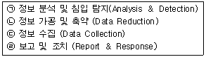
- (ㄱ) → (ㄴ) → (ㄷ) → (ㄹ)
- (ㄷ) → (ㄴ) → (ㄱ) → (ㄹ)
- (ㄷ) → (ㄱ) → (ㄹ) → (ㄴ)
- (ㄹ) → (ㄷ) → (ㄴ) → (ㄱ)
(정답률: 알수없음)
48. 인터넷 서비스를 제공하는 인터넷 서버와 서비스를 연결한 내용 중 옳지 않은 것은?
- SMTP 서버 : 전자메일 송신
- 프록시 서버 : 방화벽 기능
- WEB 서버 : 네트워크 관리
- DNS 서버 : 도메인네임 관리
(정답률: 알수없음)
49. 시스템 버스란 컴퓨터의 메인보드에서 기기들간에 데이터가 이동할 수 있게 하는 통로를 말한다. 최대속도가 빠른 것부터 느린 것 순으로 바르게 나열한 것은?
- ISA - EISA - VESA Local Bus - PCI
- EISA - ISA - VESA Local Bus - PCI
- PCI - VESA Local Bus - ISA - EISA
- PCI - VESA Local Bus - EISA - ISA
(정답률: 알수없음)
50. 다음 사례에서 사용한 기술로 가장 적합한 것은?
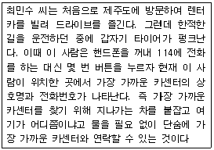
- 무선 인터넷과 전자상거래
- 무선 인터넷과 위치기반서비스
- 유선 인터넷과 전자상거래
- 유선 인터넷과 위치기반서비스
(정답률: 알수없음)
51. VAN(Value Added Network)의 설명으로 가장 적절한 것은?
- 정보를 효과적으로 송수신 할 수 있도록 통신장비들을 유기적으로 결합한 것
- 데이터 전송을 할 수 있도록 규정된 법칙
- 다수의 컴퓨터간에 통신이 가능하도록 서로 연결한 것
- 단순 전송기능에 새로운 부가가치 기능을 부여한 통신 서비스
(정답률: 알수없음)
52. 다음 중 OSI 7계층의 하위층 부터 상위층까지 옳게 나열한 것은?
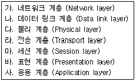
- 가-나-다-라-마-바-사
- 다-나-가-라-마-바-사
- 사-바-마-라-가-나-다
- 사-바-마-라-다-나-가
(정답률: 알수없음)
53. 아날로그 신호의 특징과 가장 거리가 먼 것은?
- 제한된 거리에 사용된다.
- 감쇠 신호 재생을 위해 증폭기를 사용한다.
- 대표적 통신망은 전화망, 방송망이다.
- 디지털 데이터를 전송하기 위해 모뎀이 필요하다.
(정답률: 알수없음)
54. 인터넷 웜(worm)에 관한 다음 설명 중 옳은 것은?
- 인터넷 웜은 파일을 지우는 등의 회복할 수 없는 피해를 끼치지 않는다.
- 인터넷 웜은 사용자의 개입 없이 시스템의 취약점을 통해 네트워크 상에서 유포된다.
- 인터넷 웜은 자기 복제되지 않는다.
- 인터넷 웜은 유닉스 시스템만을 공격대상으로 한다.
(정답률: 알수없음)
55. 다음 중 컴퓨터 운영체제의 목표와 거리가 먼 것은 어느 것인가?
- 컴퓨터내의 하드웨어와 소프트웨어 자원들을 관리하고 제어한다.
- 사용자가 쉽게 사용할 수 있도록 편리한 인터페이스를 제공한다.
- 수행중인 프로그램들에 대해 효율적인 운영을 도와준다.
- 각종 문서를 작성할 수 있는 기능을 제공한다.
(정답률: 알수없음)
56. 아래 ＜보기＞가 설명하고 있는 윈도우주 2000서버의 주요 기술은?
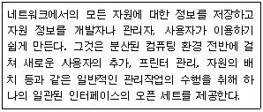
- 도메인 네임 서버(Domain Name Server)
- 액티브 디렉터리(Active Directory)
- IP 스푸핑(Spoofing)
- 넷 뷰(NetBEUI)
(정답률: 알수없음)
57. 다음은 어떤 프로토콜에 관한 설명인가?
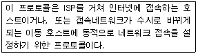
- SMTP
- DHCP
- SNMP
- FTP
(정답률: 알수없음)
58. 인터넷에서 사용되는 주소체계에 대한 설명으로 옳지 않은 것은?
- IP 주소는 컴퓨터의 주소를 숫자 3개와 점(.)로 구성되어 있다.
- 도메인네임은 숫자로 된 IP주소를 문자로 나타낸 방식이다
- IP 주소로 원하는 컴퓨터에 접속할 수 있다.
- 도메인네임으로 원하는 컴퓨터에 접속할 수 있다.
(정답률: 알수없음)
59. 직렬 포트의 일종으로서, 오디오 플레이어, 디지털 카메라, 마우스, 키보드, 스캐너 및 프린터 등과 같은 주변기기와 컴퓨터간의 플러그 앤 플레이 인터페이스로서, 12 Mbps의 데이터 전송속도를 지원하고, 최대 127개까지 장치들을 사슬처럼 연결할 수 있고, 컴퓨터를 사용하는 도중에 주변 장치를 연결해도 인식을 하는 장치는?
- AGP
- USB
- SCSI
- IEEE-1394
(정답률: 알수없음)
60. 다음 중 백오피스(Back Office) 서버로 보기 어려운 것은?
- 익스체인지 서버(Exchange Server)
- 프락시 서버(Proxy Server)
- 사이트 서버(Site Server)
- X-window
(정답률: 알수없음)